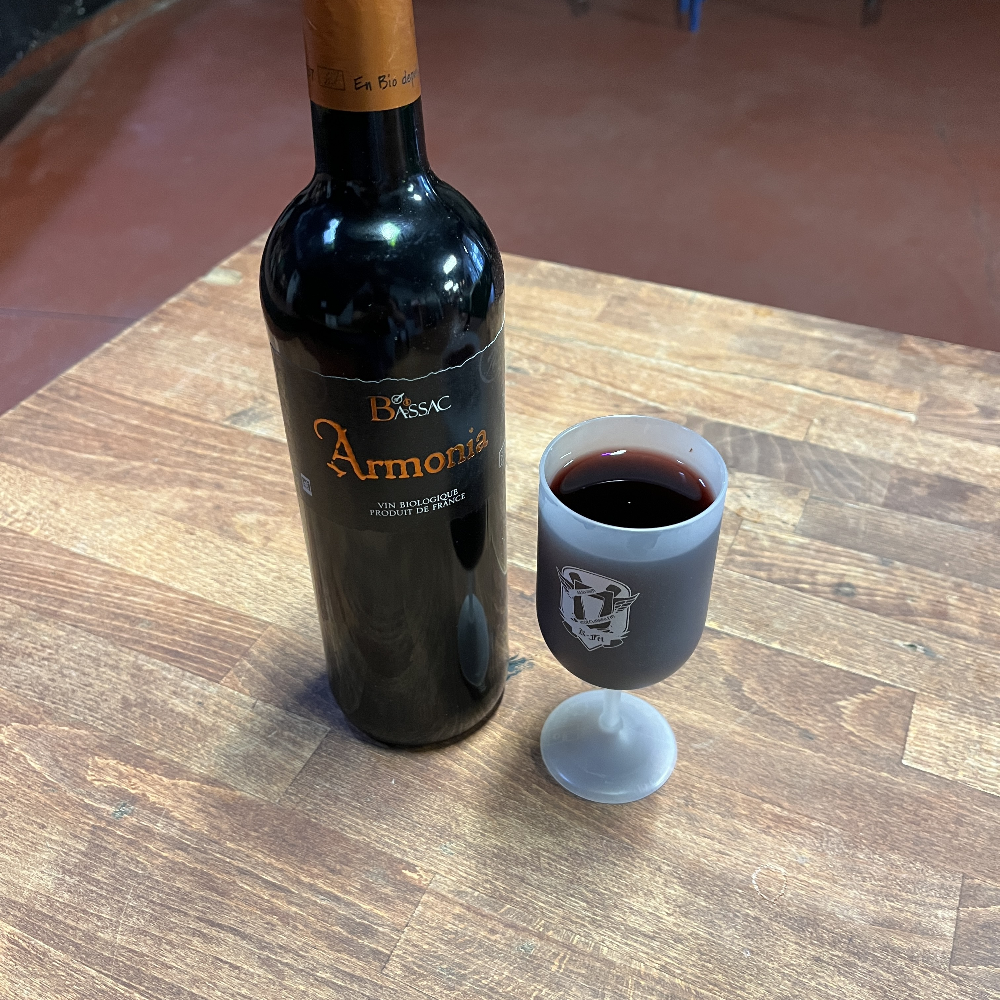
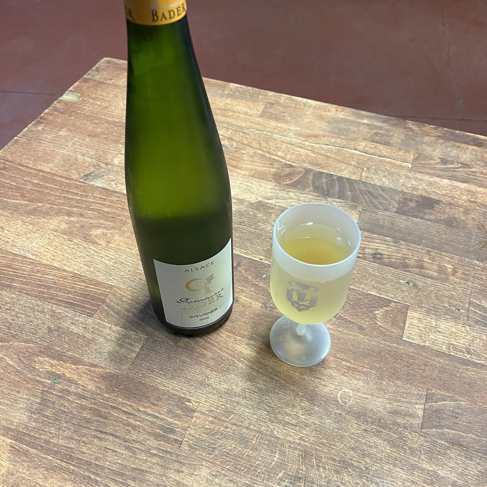

Armonia
13,5°
Verre : 2,5€ Bouteille : 12€

L'Armonia est un vin du Domaine de Bassac issue de l'agriculture biologique. Armonia est souple et rond en bouche tout en gardant un excellent rapport qualité prix.
Sylvaner
13,3°
Verre : 2,5€ Bouteille : 12€

Le Sylvaner est un est blanc du domaine Bader en Alsace. Il est sec et franc, nez floral et bouche rafraîchissante.